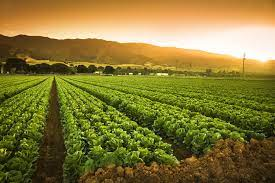
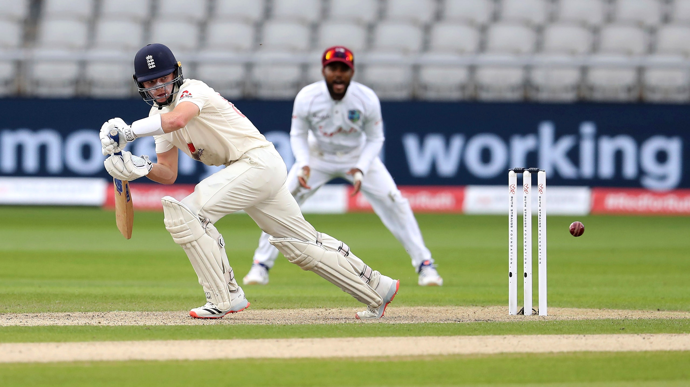

Science and Technology

Agriculture

Infrastructure

Social and health

Sports
Sports have a long history in India, dating back to the Vedic era. Religious liberties fueled physical culture in ancient India. “Duty is in my right hand, and the benefits of triumph are in my left,” reads the Atharvaveda mantra. These phrases, in terms of an ideal, are similar to the classic Olympic Oath: “For the Honour of my Country and the Glory of Sport.”